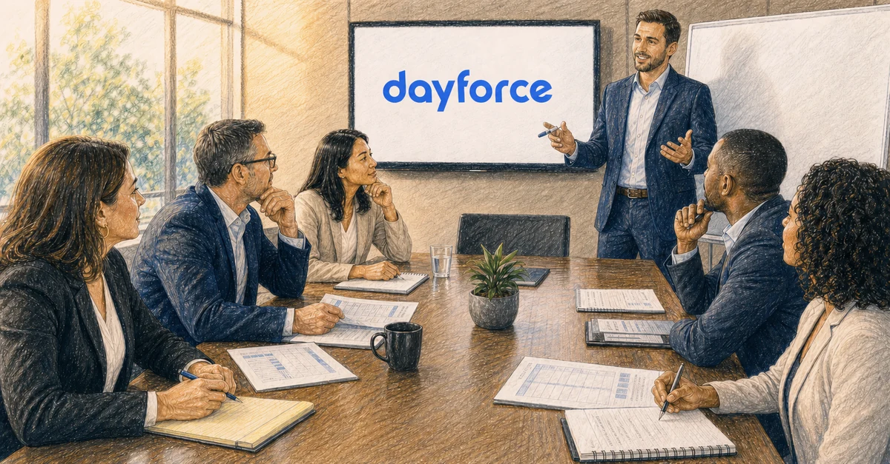

Dayforce distinguishes Systems Integration Partners and Consulting Partners within its Services Delivery Partner network. Dayforce states that only System Integrators are authorized to deploy Dayforce technology for new customers, while both partner types can support post-go-live work. Confirm the role required for the project, then score the evidence that the proposed team can protect payroll, time, scheduling, workforce operations, and adoption.
- Start with the Dayforce partner role, not a generic list of consulting firms.
- Use official Dayforce sources to verify current partner status and scope.
- Test payroll, time, scheduling, HR, data, integration, and operating depth with real scenarios.
- Interview the proposed delivery team and compare named allocations.
- Require a responsibility matrix that includes Dayforce, the partner, the client, and third parties.
- Score post-go-live support before the implementation contract is signed.
Why industry fit belongs in the Dayforce RFP
Require bidders to solve one operating scenario that crosses modules and teams. That shows whether industry experience is present in the delivery team rather than only in the sales deck.
| Operating environment | Evidence the partner or plan should address |
|---|---|
| Healthcare | Use a coverage scenario involving qualifications, differentials, overtime, approvals, payroll, and the effect on care-team readiness. |
| Manufacturing | Use a production-change scenario involving skills, shifts, transfers, labor rules, overtime, payroll, and line or job cost. |
| Retail & Hospitality | Use a peak-demand scenario involving locations, mixed worker groups, availability, transfers, premiums, manager approvals, and employee trust. |
| Services & Distribution | Use a network-change scenario involving routes or warehouses, mobile coverage, travel, overtime, approvals, payroll, and delivery commitments. |
| Public Sector | Test collective bargaining agreements, civil-service or union rules where applicable, complex schedules, budget controls, audit trails, accessibility and security requirements, public accountability, and continuity of essential services. |
Score the bidder on questions asked, dependencies found, ownership assigned, evidence required, and the quality of the operating tradeoffs it makes.
What does “best Dayforce partner” mean?
For a buyer, “best” is a fit decision with several gates.
| Gate | Required evidence |
|---|---|
| Authorized role | Current Dayforce partner category appropriate to the work |
| Product scope | Relevant Dayforce modules and delivery experience |
| Operating complexity | Payroll, time, scheduling, absence, HR, finance, and workforce scenarios like yours |
| Geography and industry | Experience with the jurisdictions, workforce, and operating constraints in scope |
| Delivery team | Named people with appropriate experience, capacity, and continuity |
| Client-side model | Clear plan for decisions, data, testing, training, and stakeholder work |
| Commercial clarity | Deliverables, assumptions, exclusions, acceptance, and change rules |
| Lifecycle support | Cutover, hypercare, knowledge transfer, support, and optimization |
A candidate that fails an authorization, product, payroll, security, geography, or capacity gate should not win because of a strong overall presentation.
Gate first, then score. That two-stage structure — mandatory requirements screening candidates before weighted criteria rank the survivors — is what the software-selection literature recommends over a single blended total.
Understand Dayforce partner roles before the RFP
Dayforce groups both Systems Integration Partners and Consulting Partners under Services Delivery Partners, but the two roles are not interchangeable.
- Systems Integration Partner: Dayforce says this is the only partner category authorized to deploy Dayforce technology for a new customer. A net-new deployment RFP must therefore verify current System Integrator authorization.
- Consulting Partner: This category can provide product insight, professional recommendations, and hands-on implementation support. It can support the project alongside the authorized deployment model, but Consulting Partner status does not replace the System Integrator authorization required for a net-new deployment.
- Post-go-live work: Dayforce says either category can support updates, enhancements, or ongoing system needs after launch.
Start with the work being purchased. If it is a net-new deployment, confirm the System Integrator requirement first. If it is advisory, optimization, staff augmentation, or post-go-live support, compare the exact services, named team, and scope rather than treating the category label as proof of fit. Ask Dayforce to confirm the current role of every finalist.
The Dayforce implementation partner RFP scorecard
Score each section from 1 to 5, multiply by the weight, and keep the evidence beside the number.
The weights below lean toward delivery discipline rather than product features because that is where the evidence points: ERP implementation research ranks project management, data accuracy, and user training among the critical success factors.
1. Authorized role and current relationship: 10 percent
Confirm the partner's current Dayforce status, tier, role, geography, and relevant services through official sources and direct confirmation. Ask which entity will sign and deliver the work.
2. Dayforce product and module fit: 10 percent
List the modules and populations in scope. Request examples from the proposed team, not only firm-wide totals. Clarify whether the candidate led deployment, client-side work, advisory, integration, optimization, or support.
3. Payroll and workforce-operations depth: 20 percent
Ask finalists to walk through a real pay-period scenario involving time collection, approvals, exceptions, calculations, corrections, scheduling, absence, and downstream finance or reporting. Look for operational control, not feature recitation.
4. Industry, geography, and workforce fit: 10 percent
Compare jurisdictions, unions, complex schedules, frontline populations, global scope, public-sector requirements, or other conditions that materially affect design and delivery.
5. Named delivery team: 10 percent
Review roles, people, product and functional depth, allocation, location, continuity, escalation access, and specialist availability. Ask what happens if a key consultant leaves.
6. Scope and commercial clarity: 10 percent
Require deliverables, acceptance criteria, responsibilities, assumptions, exclusions, dependencies, change rules, rates, expenses, and client obligations. A polished methodology is not a statement of work.
7. Data and integrations: 10 percent
Evaluate extraction, cleanup, mapping, loads, reconciliation, interface design, security, failure handling, end-to-end testing, monitoring, and steady-state ownership.
8. Testing and cutover: 10 percent
Ask how the partner plans payroll, time, scheduling, security, integration, reporting, manager, and employee scenarios. Confirm defect governance, parallel testing where applicable, exit criteria, sign-off, cutover, and rollback or contingency planning.
9. Training, adoption, and client-side model: 5 percent
Assess role-based learning and the plan for customer participation. The proposal should show who makes decisions, provides data, tests, trains, communicates, and supports the platform.
10. Hypercare, support, and optimization: 5 percent
Dayforce positions partners across implementation and post-go-live value. Compare severity models, coverage, response expectations, knowledge transfer, documentation, enhancement governance, release support, and long-term ownership.

A defensible Dayforce RFP makes authorization, operating fit, named-team evidence, ownership, and lifecycle support measurable. Original Align HCM illustration.
100-point scoring table
| Category | Weight | Candidate score |
|---|---|---|
| Authorized role and current relationship | 10 | |
| Product and module fit | 10 | |
| Payroll and workforce-operations depth | 20 | |
| Industry, geography, and workforce fit | 10 | |
| Named delivery team | 10 | |
| Scope and commercial clarity | 10 | |
| Data and integrations | 10 | |
| Testing and cutover | 10 | |
| Training, adoption, and client-side model | 5 | |
| Hypercare, support, and optimization | 5 | |
| Total | 100 |
Set required minimums for the highest-consequence areas. Averages can hide a dangerous weakness.
15 questions to put in the Dayforce partner RFP
- What is your current Dayforce partner role, and is it appropriate to this deployment?
- Which modules and delivery roles has the proposed team supported recently?
- How does your team design around a real pay period and workforce operating cycle?
- Which comparable industries, jurisdictions, unions, or scheduling environments have you supported?
- Who are the named project leaders and consultants, and what allocation is committed?
- What deliverables close discovery and become the approved design baseline?
- How are payroll rules, time workflows, security, reports, and integrations documented?
- Who owns data cleanup, mapping, loads, reconciliation, exceptions, and sign-off?
- How does each integration handle triggers, rejected records, monitoring, and correction?
- Which test phases, scenarios, users, and exit criteria prove readiness?
- What internal client capacity is required by role and phase?
- How are managers, employees, HR, payroll, administrators, and operations prepared?
- What are the cutover, contingency, and go-live decision criteria?
- What hypercare and post-go-live services are included?
- How are changes, team turnover, disputes, and transition assistance handled?
Dayforce partner red flags
- Current role or authorization is unclear.
- Firm-level credentials replace proposed-team evidence.
- Payroll and WFM answers stay at the feature level.
- Scope ends at configuration and treats data, testing, training, or cutover as generic client tasks.
- Integrations are counted but not designed.
- The timeline is promised before discovery.
- Post-go-live support begins with a new fee but no defect-transition rule.
- References are large logos with little similarity to the project.
- The partner cannot explain how it collaborates with Dayforce and the client under one governance model.
Why include Align HCM in the RFP?
Align HCM supports Dayforce customers across implementation planning, configuration decisions, data, integrations, testing, role-based training, go-live readiness, hypercare, SmartCare, reporting, and post-go-live optimization. Review Dayforce implementation support, the Align HCM Dayforce page, and client-side services.
For evidence of work in a complex workforce environment, review the Driscoll's Mexico labor-compliance automation case study.
No buyer should accept a universal “best partner” claim without fit evidence. Contact Align HCM for a free, no-obligation assessment of your Dayforce scope, RFP, shortlist, or active implementation risks.
Frequently asked questions
There is no universal best Dayforce partner. The best fit depends on the authorized delivery role, Dayforce modules, payroll and workforce complexity, industry, geography, proposed team, client capacity, commercial model, and post-go-live needs.
Dayforce states that both can support customers after go-live, but only System Integrators are authorized to deploy Dayforce technology for new customers. Confirm the current role and required scope directly with Dayforce and the partner.
Start with the Dayforce Partner Network and partner-exchange sources. Verify the current profile, role, services, geography, and tier, then confirm that the proposed delivery team matches your work.
Include products, modules, populations, workforce complexity, data, integrations, security, testing, training, client capacity, timeline, cutover, hypercare, support, deliverables, assumptions, exclusions, acceptance criteria, and scenario questions.
Align HCM offers client-side HCM project support along with Dayforce implementation, integration, training, support, and optimization services. The exact role and scope should be confirmed for the project.
Conversion CTA
Ask Align HCM to review your Dayforce scope, RFP, or partner shortlist.